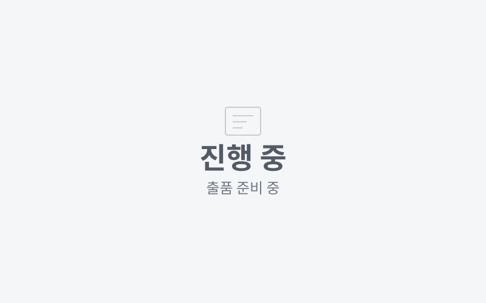

프로젝트 목록
| 01 실무 | (주)지킴컴퍼니에서 한 서비스 기획·운영. 기획·정책·검증은 제가, 구현은 개발팀이 맡았습니다. |
|---|---|
| 02 SKALA | AI 서비스 개발 교육 과정(진행 중)의 실습·과제. 혼자 만든 것과 팀 과제를 구분해 적었습니다. |
| 03 팀 | 사이드 프로젝트와 대회. 팀 결과와 제 역할을 나눠 적었습니다. |
| 04 개인 | 직접 쓰려고 만든 웹앱과 도구. AI 코딩 도구를 활용해 만들고 화면에서 확인했습니다. |
실무 | 지킴컴퍼니
At
01 · 실무 · 기획·검증
의약품 도매몰 주문·박스 상태 연동
약국의 처방전 보관 주문은 도매몰에서 받지만 수거·정산은 박스별로 진행했습니다. 한 주문의 박스를 다른 날에 수거해도 정산이 맞도록, 외부 주문번호와 상품 순번을 내부 박스 ID에 연결하는 기준을 정했습니다.
내 역할
도매몰 API 정의서를 검토하고 주문과 박스의 연결 기준, 수거·정산 정책을 정했습니다. 개발팀이 구현한 뒤 양쪽 데이터를 검수했습니다.
성과와 검증
- 양쪽 데이터 대조 · API 응답과 양쪽 화면을 대조해 수집 시각 경계에서 주문이 빠지는 오류와 배송정보가 첫 박스에만 붙는 오류를 찾았습니다. 개발팀에 전달한 뒤 다시 확인했습니다.
- 수기 등록 시간 · 해당 담당자가 도매몰 주문을 내려받아 어드민에 수기로 등록하던 시간이 하루 약 1시간에서 10분으로 줄었습니다.
- 수거 후 정산 · 부분 수거한 건도 정산에 반영됐습니다. 운영 중에는 도매몰과 어드민에 서로 다른 상태가 보인다는 문의도 줄었습니다.
박스 두 개 중 하나만 수거하면 도매몰에는 어떻게 표시할까
운영 담당자는 도매몰에서 약국의 처방전 보관 주문을 엑셀로 내려받아 내부 어드민에 다시 입력했습니다. 주문을 그대로 가져와도 한 가지 문제가 남았습니다. 도매몰에서는 주문 한 건으로 보이지만, 현장에서는 같은 주문의 박스도 서로 다른 날에 수거했습니다.
박스 두 개 중 하나만 수거하고 다른 하나는 다음 날로 미룬 경우를 생각했습니다. 주문번호만 보면 어느 박스를 정산해야 할지 알 수 없습니다.
그래서 도매몰에서 이미 쓰는 상품 순번을 주문번호와 함께 읽어 내부 박스 ID에 연결했습니다. 수거한 박스만 정산에 넣고, 도매몰에는 기존 ‘부분배송’ 상태를 보내도록 정했습니다.
- API 정의서 검토
- 상태 정책
- 데이터 대조
- QA
02 · 실무 · 서비스 기획
급여명세서 서비스 기획
기장 담당자 한 명이 매달 약 240명분의 급여명세서를 작성했습니다. 약국에서 세후 금액을 알려 주면 실수령액이 맞을 때까지 입력값을 바꿨습니다. 이 계산을 자동화하고, 약국장이 명세서를 확인해 직원에게 바로 보낼 수 있도록 발급 흐름을 기획했습니다.
내 역할
급여 입력 화면, 계산 기준, 명세서 발급·공유 흐름을 기획했습니다. 서비스 구현은 개발팀이 맡았습니다.
성과와 검증
- 계산과 ERP · 급여 유형과 금액을 바꿔 가며 서비스와 위하고의 계산값을 대조했습니다. 내보낸 엑셀 파일도 위하고에 직접 불러와 ERP에 급여 내역이 반영되는지 확인했습니다.
- 화면 QA · 화면에서는 시나리오별로 입력부터 발급까지 직접 진행했습니다. 브라우저 콘솔 오류와 입력·발급 과정의 사용성을 함께 점검했습니다.
- 줄어든 수작업 · 4대보험 고지액을 급여 계산에 자동 반영하면서 기장 담당자가 공단에서 고지액 명세서를 직접 내려받는 일이 줄었습니다.
- 현업 적용 · 배포 후에도 계산을 믿기 어려워 기존 방식을 쓰는 담당자들이 있었습니다. 담당자용 어드민 운영 가이드와 고객용 사용 가이드를 따로 작성했습니다. 회의에서 계산 기준과 사용법을 설명한 뒤, 기장 담당자의 실제 급여 계산과 고객 베타 운영까지 확인했습니다.
실수령액에서 거꾸로 계산한 이유와 개발팀에 전달한 기준
약국장이 직원에게 급여명세서를 보내는 서비스였지만, 기장 담당자들은 기존 기능을 거의 쓰지 않았습니다. 계산이 맞지 않아 약국에서 알려 준 실수령액이 나올 때까지 입력값을 바꿔야 했습니다.
약 30개 거래처의 기장을 직접 하면서 약국마다 급여를 알려 주는 방식이 다르다는 걸 알게 됐습니다. 기존 명세서에는 최종 금액만 남아 담당자가 바뀌면 산정 근거를 알기 어려웠습니다. 월급·시급, 세전·세후 약정을 구분해 입력 항목과 계산 기준을 정했습니다. 실수령액을 약정한 일용직은 공제 후 약정액이 남도록 세전 급여를 거꾸로 계산했습니다.
이 규칙을 엑셀로 정리하고 Apps Script로 옮겨 개발팀에 참고 코드로 전달했습니다. 목표는 기장 담당자가 명세서를 직접 만드는 일을 없애는 것이었습니다.
약국장에게는 JPG, 기장 담당자에게는 엑셀이 필요했던 이유
약국장에게 필요한 건 급여를 확인하고 직원에게 전달하는 일이었습니다. 명세서를 JPG로 저장해 카카오톡으로 보낼 수 있게 설계했습니다. 담당자가 후속 기장에 쓸 급여 내역은 엑셀로 내보내도록 했습니다.
- 계산 기준 정의
- 위하고 대조
- Apps Script
- 현업 적용
03 · 실무 · AI 서비스 정책
약국 AI 세무 상담 | 삼일회계법인 협업
약국 운영자가 세무·노무·행정을 물어보는 AI 상담 서비스입니다.
튜닝 일정과 데이터가 불확실했을 때
기존 모델을 활용하면 빠르게 적용할 수 있을 것으로 예상했지만, 협력사는 튜닝에 한 달 이상이 필요하다고 안내했습니다. 내부에서도 어떤 데이터가 효과적일지, 어떤 형태로 제공해야 할지 판단하기 어려웠습니다.
- 먼저 확인할 자료: 바로 준비할 수 있는 FAQ를 RAG로 활용해 응답 흐름부터 확인하고, 필요하면 튜닝하는 방향을 협력사와 협의했습니다.
- 뒤로 미룬 자료: 상담 음성자료는 수집·정제·사례 분류에 시간이 필요해, 1차 버전을 확인한 뒤 고도화 단계에서 쓰자고 제안했습니다. 제안 단계였고, 실제 활용 여부는 확인하지 못했습니다.
내가 정한 정책과 검증
- FAQ에서 먼저 답을 찾고, 적절한 답이 없으면 기존 생성 방식으로 넘기는 응답 순서
- 답하지 못하는 경우를 셋으로 나누고 다음 행동을 정함: 답을 찾지 못하면 전문가 상담 연결, 약국 운영 범위 밖 질문이면 상담 범위 안내, 시스템 오류면 재시도 안내와 오류 기록
- 근거 조문 표시 규칙, AI 생성 답변 고지, 대화 이력·북마크 보관 정책, 토큰 사용량 상한 요구사항
- 약국 세무 상담 기록과 약국 업무 매뉴얼 등 자료를 정리해 제공하고 Q&A를 검토
베타에서 확인한 범위
베타 테스트에서 일부 FAQ 질문에 10초 이내로 답하는 것을 직접 확인했습니다. 일부 질문을 관찰한 값이며 전체 평균이 아닙니다. 베타 단계에서 퇴사해 정식 운영 성과는 확인하지 못했습니다.
이 사례에서는 답변 범위 정책을 정해 협력사에 넘기는 데까지 했습니다. 그 정책이 코드에서 어떻게 지켜지는지는 이후 개인 프로젝트 TaxDesk에서 직접 만들어 확인했습니다.
- AI 서비스 정책
- 예외 처리
- 외부 협업
- 화면 설계
04 · 실무 · 연동 흐름 기획
약국가계부 연결 흐름 개선 · 제휴 사이트 연동
약국가계부를 처음 설정할 때 같은 인증서를 여러 번 입력해야 했습니다. 홈택스·요양기관·4대보험은 한 번에 연결하고, 별도 계정이 필요한 여신금융은 로그인 경로를 나눴습니다.
내 역할
사내 개발팀·외부 데이터 연동 업체와 기관별 인증 조건을 확인하고, 그 조건에 맞춰 약국의 첫 설정과 예외 로그인 흐름을 기획했습니다.
성과와 검증
- 운영 반영 후 첫 설정에 원격지원이 거의 필요 없어졌습니다. 새 영업 파트너도 한 번 교육을 받은 뒤 대체로 직접 연동했습니다. 온라인팜의 가계부 화면도 실제 서비스에 반영됐습니다.
원격지원에서 본 반복 입력과 홈택스 로그인 예외
약국가계부의 첫 설정을 원격으로 도울 때마다 약국장은 홈택스를 연결한 뒤 요양기관과 4대보험 화면에서도 같은 인증서를 입력했습니다. 새 영업 파트너가 약국에 설치를 안내할 때도 이 절차를 설명해야 했습니다.
홈택스·요양기관·4대보험은 인증서를 한 번 입력하면 세 곳을 연결하도록 기획했습니다. 별도 계정이 필요한 여신금융은 이 흐름에서 분리했습니다.
예외는 홈택스였습니다. 약국의 인증서로 로그인할 수 없거나 개인 금융인증서를 쓰는 경우에는 별도 창을 열어 아이디·비밀번호 또는 금융인증서로 계속할 수 있게 했습니다.
온라인팜에서도 약국가계부를 볼 수 있게 한 과정
제휴사 온라인팜을 이용하는 약국은 사이트 안에서 바로 손익리포트와 청구정보를 볼 수 있도록 iframe 연동도 기획했습니다.
- 연결 흐름
- 예외 정의
- 제휴 연동
- 원격지원
05 · 실무 · 운영 기획
처방전 보관 서비스 운영 · 스캔센터
약국은 처방전을 의무 보관해야 합니다. 실물 처방전을 수거·스캔해 전자·실물로 보관하고, 필요할 때 찾을 수 있게 하며 보관 기간이 지나면 폐기까지 대행하는 서비스입니다.
문제 정의
주문·수거·스캔·보관 단계에서 같은 박스를 추적하기 어려웠고, 스캔 업로드가 주문번호와 어긋나는 경우가 있었습니다.
내가 정한 정책
- 송장번호 매칭·수거접수·발주 리스트 등 반복 업무의 자동화를 기획해 개발팀에 전달
- 송장에 주문번호가 분명히 들어가도록 수거신청 데이터 필드 수정을 기획
- 같은 상품 순번끼리 한 번에 수거하도록 정비하고, 박스 윗면·옆면에서 보이는 라벨 도입
스캔센터 운영
새로 연 스캔센터에서 목표 작업량·작업 체크리스트·입출고 기준·매뉴얼을 만들고, 작업 배치·교육·품질관리를 맡았습니다. 운영 당시 직원 10명이 하루 평균 약 15만 장을 처리했습니다(서비스 규모이며 본인이 늘린 처리량은 아닙니다). 주문이 몰릴 때는 인력 배치와 작업 순서를 다시 짰고, 외부 창고와는 파레트 코드·포장 단위·소통 방식을 정리했습니다.
스캐너가 멈추면 수리 기사를 기다려야 했습니다. 수리할 때 옆에서 조치 방법을 배웠고, 다른 직원도 따라 할 수 있게 작업 가이드에 담았습니다.
- 운영 자동화
- 현장 운영
- 작업 기준
- 물류 체계
06 · 실무 · 기획
종합소득세 예측 기획
무엇을 기획했나
홈택스 API 응답 항목을 내부 데이터 구조에 연결하고, 소득유형별 계산 흐름과 화면 표시 항목을 정리했습니다. 각 필드와 계산 결과의 의미를 개발자·디자이너에게 설명하며 기능을 기획했습니다.
결과
실제 서비스에 적용해 홍보용 기능으로 운영했습니다.
- 홈택스 API
- API 응답 매핑
- 계산 흐름 정리
07 · 실무 · 기획 · 디자인
거래처 관리 개선 · 수임계약 자동화
거래처 관리 개선
기장 현황을 여러 사람이 Excel로 함께 고치다 변경이 누락되는 문제를 바탕으로 거래처 상태 관리를 기획했습니다. 현업이 구분하는 사업자 유형·업종과 단계별 추적 항목을 정리하고, 사용자 역할에 따라 권한과 필요한 데이터를 나눴습니다. 백엔드 개발자가 작성한 ERD를 기획 규칙과 대조해 조정 의견을 전달했습니다.
수임계약 자동화 (2026.04 – 06)
기존 회원 관리는 사업자등록번호가 있는 고객을 기준으로 했지만, 실제 계약 준비는 구두로 수임을 정한 시점부터 시작됐습니다. 사업자번호가 없는 수임예정 고객을 별도 리스트로 관리하도록 기획하고, 실제 응대·수기 계약 과정을 자막 영상으로 정리해 개발팀에 전달했습니다. CMS 결제 연결을 포함해 기획하고 디자인에 반영하는 단계까지 진행한 뒤 퇴사했습니다.
기획 문서 방식
개발자·디자이너에게 어떤 문서가 편한지 물어 입력·출력·API 규격·정책·예외를 나눈 명세 양식을 만들었습니다. 함께 일한 개발자와 디자이너에게 “구현 중에 판단해야 할 것들이 문서에 정리되어 있어 편하다”는 말을 들었습니다.
- 권한·데이터 분리
- ERD 검토
- CMS 결제
- 명세 양식
SKALA 교육 과정
SKALA
Projects
01 · 교육 · 1인
TaxDesk | 금융소득 세무상담
가상 증권사의 금융소득 세무상담을 구현한 개인 실습입니다. 서버가 소득을 조회하고 과세 여부와 세액을 계산합니다. 다른 소득이 미확인(null)이면 금액을 되묻고, 고객이 없다고 답한 경우에만 해당 소득을 0원으로 기록합니다.
성과와 검증
- 입력 처리 · 미입력 상태에서 계산 없이 되묻는 동작과 “없어요”를 0원으로 처리하는 동작을 따로 테스트했습니다.
- 서버 코드 테스트 · 11월 개선 버전에서 모델을 모의 객체로 대체해 질문 분류, 계산 보류, 계정 간 데이터 분리 등을 확인했습니다. 코드 테스트 126건이 통과했습니다.
- 골드셋 자동 검증 · 골드셋 52건 중 46건을 실제 모델 없이 자동 검증했습니다. 서버 동작 31건은 명세와 일치했고, 세액·과세 구분 15건은 별도로 계산한 기대값과 일치했습니다. 이 기대값은 세무 전문가의 검토를 받지 않았습니다. 조문 인용 6건은 이 실행에서 제외했습니다.
- 실모델 검증 · 초기 버전에서는 별도로 GPT-4o에 규정 질문 12건을 입력했습니다. 검색된 조문과 답변이 인용한 조문을 기대 근거와 대조해, 필요한 조문을 찾지 못하거나 다른 조문을 인용해 잘못된 세율을 답한 사례를 확인했습니다.
소득을 입력하지 않았는데 세액이 나왔던 원인과 수정
회사에서 약국 상담 챗봇을 기획할 때는 어디까지 답할지 정해 협력사에 전달했습니다. 그 기준이 실제 답변을 어떻게 바꾸는지 직접 보고 싶어, 가상 증권사 계좌로 이자·배당소득을 상담하는 개인 실습 TaxDesk를 만들었습니다.
초기 실험에서 다른 종합소득을 입력하지 않은 계정으로 최종 소득세를 물었습니다. 시스템은 그 소득을 0원으로 두고 14,350,640원이라고 답했습니다. 가정이 설명에서 빠지자 확정된 세금처럼 읽혔습니다.
Java·Spring Boot 서버에서 소득 조회, 과세 판정, 세액 계산의 순서를 직접 제어하도록 구현했습니다. 다른 소득이 미확인(null)이면 계산을 멈추고 금액을 되묻습니다. 고객이 “없어요”라고 답하면 0원을 기록하고 계산을 이어갑니다. 되묻는 문장은 서버에서 정해 그대로 보여 줍니다. AI가 법령을 설명할 때도 검색 결과에 없는 조문을 인용하면 서버가 답변을 보류합니다.
코드 (ef5c2b9) ↗ 테스트 코드 ↗ 평가셋 52건 ↗
- Spring AI
- RAG
- 서버 제어 흐름
- 테스트 · 오프라인 평가
02 · 교육 · 2인
차량용 교통표지판 인식 모델 경량화
기준 모델의 정확도가 이미 98.5%였습니다. 과제가 제시한 방향(성능 개선·경량화·둘의 균형) 중 경량화를 골랐습니다. 차량에서는 이 모델 하나만 메모리를 쓰지 않고 차선·보행자 인식 모듈이 같이 돌기 때문입니다.
주요 판단
- 파라미터 218만 개 중 연결만 담당하는 한 층이 96%를 차지하는 것을 확인하고 이 층을 줄이는 후보를 비교
- 통제 실험 21종을 시드 3개로 비교
- Valid와 Test 격차의 원인을 찾다가, 같은 표지판을 연속 촬영한 묶음 888개가 학습·검증 양쪽에 걸쳐 있는 것을 확인. Test는 후보를 고르는 점수로 쓰지 않음
결과
- 파라미터 2,184,107 → 549,547(25.2%), 모델 크기 8.33MB → 2.10MB, 연산량 22.75M → 6.13M MACs
- 최종 후보 두 개(4.12MB · 2.10MB)의 Valid 정확도 차이는 0.09%p로 시드 변동폭과 비슷해 작은 모델을 선택
- 추론 시간은 한 장씩은 작은 모델이 오히려 느리고(0.174ms vs 0.099ms) 배치로는 빨랐습니다(0.080ms vs 0.216ms). 파라미터 수만으로 속도를 판단할 수 없었습니다.
남긴 검증 항목
확신하지 못할 때의 동작, 정지·속도제한처럼 안전과 직결된 클래스의 별도 확인, 야간·역광·우천 조건은 미검증 항목으로 명시했습니다.
- PyTorch
- 모델 경량화
- 실험 설계
- CNN
03 · 교육 · 4인 팀
EDU:UP | 교육복지포인트 플랫폼
회사가 배정한 교육복지포인트가 쓰는 사람만 계속 쓰고 정작 배워야 할 사람에게는 닿지 않는 문제를 다뤘습니다. 목록이 수백 개라 고르는 일이 부담이 되어 미루다 분기 말에 포인트가 소멸됩니다.
서비스 방향 (팀)
직무와 관심 분야를 한 번 답하면 강의 2개와 도서 2권, 네 건만 추천받고 신청까지 이어지게 했습니다. 신청 → 포인트 차감 → 확정을 이벤트로 잇는 흐름은 팀이 제공된 MSA 템플릿 위에서 구성했습니다.
담당 역할 · 화면
Vue 3·Pinia로 프론트엔드 화면을 구현하고, 스펙 충돌과 백엔드 요청 사항을 문서로 정리했습니다. 백엔드는 신청 차감 금액 등 일부만 고쳤습니다.
- Gateway 한 곳을 통해 다섯 개 서비스를 화면에 연결
- 신청 상태를 ‘접수(PENDING)’와 ‘확정(ACTIVE)’으로 나눠 표시하고, 승인 대기와 실패를 다른 문구로 보여 줌
- 추천 서비스(팀원이 만든 LLM 추천)가 실패하면 화면의 규칙 기반 추천 → 인기순으로 대체
- 신청 중에는 버튼을 막아 화면에서의 중복 신청을 방지
협업
발표 직전 팀이 백엔드 구현 범위만 남기자고 했을 때, 문제 정의의 핵심 화면(포인트 잔액 등)은 모의 데이터로라도 남기자고 제안했습니다. 일부를 유지하고, 본 설계·현재 대체 구현·다음 스프린트 계획을 표로 정리해 발표했습니다.
한계
포인트 잔액은 모의 데이터였고, 동시 신청·이중 차감 검증과 취소 처리는 다음 스프린트 범위로 남겼습니다. 시연이 멈추지 않도록 승인 대기가 약 1분 이어지거나 서버 응답이 없으면 화면에서 확정으로 넘기는 임시 처리를 두었습니다. MSA 구조와 추천 모델은 팀원이 맡았습니다.
- Vue 3
- 프론트엔드
- MSA 실습
- Agile · Scrum
04 · 교육 · 1인
관계부 | 기능·화면·ERD·API 설계
5월에 만들어 쓰던 관계부를 과제로 다시 설계했습니다. 페인 포인트와 기능을 하나씩 맞춰 보니 AI 관계 분석, 카톡 대화 가져오기, 리마인더는 연결되는 곳이 없었습니다. 받은 금액을 확인하고 명부를 정리하는 데는 기록과 조회면 충분해서 뺐습니다.
처음 만든 앱 | 2026.05 –, 개인 사용(미출시)
사람마다 필요한 걸 한곳에 기록하려고 직접 만들어 쓰던 앱입니다. Next.js · Supabase · Capacitor, AI 요약은 Claude · Gemini API.
- 인물 카드: MBTI·인스타·명함·못 먹는 음식 등 자유 메모
- 경조사비·빌려준 돈 기록, 주고받은 잔액 계산
- 카톡 대화를 올리면 AI가 날짜별로 요약, 관계 건강도 분석
- 연락 리마인더 · 경조사 D-day 알림
기능·화면·데이터 설계
- 페인 포인트 4개 → 기능 18개 → 화면 11개 → 테이블 6개 → API 33개
- API마다 어느 화면에서 부르는지 적고, 화면에만 보이고 저장하지 않는 값(건수, 하트, 명부 합계)은 표로 따로 정리
- 뺀 기능은 지금 테이블과 API로 만들 수 있으면 Phase 1, 외부 연동이 필요하면 Phase 2로 나눔
설계에서 정한 정책
- 차액은 계산할 수 있지만 보여 주지 않음. 관계를 숫자로 따지게 될 것 같아 ‘보내기만 한 / 받기만 한’ 목록을 둠
- 축의금은 경조사보다 주고받은 돈에 가깝다고 보고 gifts에만 둠. 두 곳에 두면 합계가 두 번 잡힘
- 중복 입력은 화면 경고와 DB 제약 두 겹으로 막도록 설계
- 다른 사람의 기록에 접근하면 403이 아니라 404를 주도록 설계. 기록이 있다는 사실만 알려져도 민감하다고 봄
구현 범위
Vue 3로 화면 10개를 구현하고 목업 API(샘플 데이터)로 기록 조회·추가 흐름과 위 정책의 동작을 확인했습니다. 서버와 DB는 설계 문서(API 명세·dbml)까지입니다.
발표자료 ↗ ERD ↗ UI 흐름도 ↗ GitHub ↗ 처음 만든 앱 ↗
- 요구사항 정의
- ERD · dbml
- OpenAPI 3
- Vue 3 · Pinia
표시광고 AI 사전검토 서비스(가칭)

광고 이미지의 문구를 추출해 원본과 대조하고, 담당자가 누락을 확인하고 수정·재검토할 수 있는 서비스를 만들고 있습니다.
담당 · 브랜드 디자인·UX·프론트엔드 전체 · OCR·VLM 기능 설계·구현
브랜드 이미지 디자인부터 UX·프론트엔드 전체를 맡았고, 이미지 광고의 문구 추출(OCR)과 시각적 맥락 구조화(VLM)를 설계·구현했습니다. 백엔드·법률 검토 AI 담당자와 연결할 입출력 계약과 인수인계 문서도 정리했습니다.
모델 활용
- GPT-4.1 하나로 OCR과 VLM을 처리하고, 단계마다 프롬프트와 출력 스키마(Structured Outputs)를 따로 설계해 결과를 코드로 검증할 수 있게 함
- 호출 횟수를 정해 둠: 이미지당 VLM 1회, 작은 글씨 재판독은 요청당 최대 4회와 출력 토큰 상한. 실패해도 자동 재시도·모델 자동 변경 없이 실패로 기록
- 수정 시안은 이미지 편집 모델로 만들고, 결과를 GPT-4.1 OCR로 다시 읽어 요청한 문구와 대조
OCR과 VLM 연결
- ① OCR이 문구를 전사하고 H1·H2·본문·조건 문구 등 위계로 구조화. 읽지 못한 부분은 ‘추가 확인 필요’로 반환
- ② 원본 이미지 바이트·OCR 전사·사용자 수정본의 해시를 묶은 snapshot으로 VLM이 같은 이미지와 같은 전사를 보도록 고정. OCR 결과가 이미 있으면 OCR은 다시 부르지 않고 VLM만 1회 실행
- ③ VLM은 인물·사물·배치·강조와 주장·조건 후보를 내고, 근거로는 전사 줄의 ID와 그대로 옮긴 인용만 고르게 함
- ④ 인용이 그 줄에 정확히 한 번 나오는지 코드로 확인해 위치를 계산. 없는 인용·여러 번 나와 모호한 인용은 거절
- ⑤ 검증된 주장·조건 연결을 게시 크기·잘림 계산과 합쳐 후속 검토로 넘김. 게시 크기만 바뀌면 모델을 다시 부르지 않고 계산만 갱신
- ⑥ 작은 글씨는 선택 영역을 잘라 확대해 다시 판독하고, 기존 전사와 다른 부분은 후보로만 보여 줌(원문을 덮어쓰지 않음)
맡은 기능
- 브랜드·화면 디자인: 서비스 브랜드 이미지 디자인과 전체 화면 디자인
- 사용 흐름: 광고 입력 → 검토 → 문구 수정 → 시안 비교. 이미지·문구만·여러 장·수정 이력별 예외를 나누고, 결과 화면에서 법적 쟁점과 맥락 쟁점을 구분
- 프론트엔드 전체 구현: 그중 OCR 결과 확인·수정, 원본 확대 비교, 접수 후 바로 목록으로 이동하는 비동기 흐름, 업로드 완료 전에 요청되던 문제 수정, 390px 모바일 가로 넘침 수정, 법령의 검토 기준일·시행일 구분 표시
- 게시 조건 기반 표시 크기·잘림 점검: 웹(CSS px)·인쇄(mm) 게시 크기로 글자 표시 높이와 잘림을 계산. 계산값과 법적 판단은 구분
- 수정 시안: 지정 영역만 원본에 합성하고, 생성된 문구를 독립 OCR로 대조. 결과는 초안으로 분리해 원본과 기존 검토 결과를 보존
- 기업 용어·상품 정의 입력(문서 버전·유효기간·적용 상품 확인), 여러 광고 파일의 파일별 분석
- 검토 입력 폼, 요청 목록, AI 검토 결과를 Storybook에 정리했습니다. 목록이 비었거나 오류가 난 경우, AI가 분석 중이거나 추가 정보를 요청한 경우도 각각 확인할 수 있습니다.
- 통합형·분리형 화면을 동작형 A/B 목업으로 만들어 팀 논의에 사용
현재 상태
- OCR 모듈·화면 연결과 프론트엔드 개선은 구현
- VLM 분석·표시 크기 점검·재판독·수정 시안은 로컬 독립 구현 단계. 합성 광고로 실제 모델 연결만 확인했고, 실제 광고의 정확도는 아직 측정하지 않음
- A/B 화면은 디자인 비교용 목업이며, 운영 저장·권한·최종 재검토 통합은 후속 작업
- 법령·심결례 검색, 사회적 논란 사례 대조, 최종 법적 판단은 팀의 다른 담당 영역
- React · TypeScript
- Python · Pydantic
- GPT-4.1 Vision
- OCR · VLM
OCR·화면은 구현, VLM 확장 기능은 로컬 독립 구현·연결 검증 단계입니다.
팀에서 만든 것
With
a Team
01 · Team · 7인 · PM
퀴켓 | AI 퀴즈 학습 앱
퀴켓은 학습 자료로 퀴즈를 만들고 오답을 다시 푸는 앱입니다. 챕터 이름에서 막히던 사용자가 과목명만 정하면 자료를 올리고, AI가 나눈 챕터는 나중에 고칠 수 있게 바꿨습니다.
내 역할
7인 팀의 PM으로 사용자 조사와 출시 범위 조율을 맡았습니다. Figma 와이어프레임 100화면 이상을 작성하고, 기능 명세부터 QA와 스토어 심사 대응까지 담당했습니다. 최종 앱의 디자인과 개발은 팀원들이 맡았습니다.
성과와 검증
- 사용자 테스트 · 2차 테스트에서 6명과 가설 8개를 확인했습니다. 2개는 검증, 4개는 부분 검증, 1개는 미해결, 1개는 측정 불가로 기록했습니다. 풀이 안내를 고친 뒤에는 한 문제씩 풀기와 한 번에 풀기를 모두 관찰했습니다.
- 내부 QA · 바뀐 업로드 순서는 최종 내부 QA와 발표 시연에서 확인했습니다. 새 과목이 퀴즈 만들기에 반영되지 않는 문제와 ‘다시 풀기’ 오류는 우선 수정 항목으로 분류했습니다.
- 팀 출시 · 팀이 App Store와 Google Play에 출시했고, 저는 DDD PM MVP로 선정됐습니다. 현재 서버 운영은 중단됐습니다.
‘파트’를 ‘챕터’로 고쳐도 업로드가 어려웠던 이유
사용자 인터뷰 12건에서 학습자들은 강의 노트로 복습 문제를 직접 만드는 게 부담스럽다고 했습니다.
2차 사용자 테스트에서는 ‘파트’를 ‘챕터’로 바꾼 뒤에도 자료 구조를 헷갈려 했습니다. 자료를 먼저 올리고 싶다는 의견을 듣고, 용어보다 입력 순서를 바꿔야겠다고 판단했습니다. 과목명만 입력하면 파일을 올리고, AI가 나눈 챕터와 파트는 결과를 본 뒤 고치도록 했습니다.
문항당 최소 자료량을 정하고 팀과 첫 출시 범위를 조율한 과정
앱 개발 전에 Next.js와 Gemini API로 문제 생성 시제품을 만들었습니다. 짧은 자료에서도 문제가 너무 많이 나와, 한 문제를 만드는 데 필요한 최소 자료량을 정했습니다.
디자이너는 캐릭터와 도토리 요소를 살리고 싶었고, 개발팀은 출시일까지 핵심 학습 기능을 완성해야 했습니다. 저는 캐릭터와 도토리를 화면에 남기고, 첫 출시 기능과 이후에 다룰 기능을 나눠 명세서와 스프린트 작업에 같은 우선순위를 표시했습니다.
자료 업로드 → 자동으로 구성된 챕터·파트 확인 → 파트명 수정. 2차 사용자 테스트에서 자료를 먼저 올리고 싶다는 의견을 반영했습니다. 변경한 흐름은 최종 내부 QA에서 확인했습니다.
Google Play ↗ App Store ↗ 검증용 미니 버전 ↗ 미니 버전 코드 ↗
- 기획
- 사용자 조사
- 스코프 조정
- 스토어 출시
02 · Team · 2인 · 출시
에이링크 | AI 링크·QR 북마크
링크와 QR코드를 한곳에 모으는 북마크 서비스입니다. 링크를 넣으면 AI가 폴더·이름·설명·태그를 채웁니다.
주요 기능
- 링크를 추가하면 AI가 폴더 분류·링크명·설명·태그를 자동 생성
- 웹·앱 통합 북마크 + 포털 검색 내장
- 링크에 할 일과 알림을 붙여 기록 관리
주요 개선 | 분석 실패를 기본 흐름으로
로그인 벽과 봇 차단으로 AI가 읽지 못하는 링크가 생각보다 많았습니다. 자동 분류 실패를 예외로만 두면 사용자가 그 자리에서 막히므로, 분석하지 못한 링크도 사용자가 정보를 직접 입력해 저장하는 흐름을 기본으로 설계했습니다.
담당 역할
요구사항을 말로 맞추는 대신 프로토타입을 먼저 배포해 기준으로 고정한 뒤 React·TypeScript로 이관했습니다. 서버·DB 구조와 인프라는 팀 백엔드 개발자가 설계했습니다.
- AI 자동 분류
- React
- PWA
- iOS
03 · Team · 대회
데이콘 블랙박스 대회 | 재촬영 판별 실험 · 라벨링 도구
주행 영상으로 재촬영 여부(Stage 1)·사고 시점·주행 상태를 분석하는 3단계 대회입니다.
재촬영 판별 실험 (Stage 1)
- 원본과 재촬영을 모사한 영상 300쌍으로 모델을 학습시켰습니다. 대회 리더보드에서 재촬영 판별 점수는 첫 제출 0.3748에서 0.7510으로 올랐습니다.
- 합성 재촬영 데이터로 학습한 딥러닝 모델이, 직접 수집한 실촬영 재촬영 13건을 모두 놓쳤습니다
- 원인을 찾다 합성 학습셋 836건 중 336건이 평가용 원본에서 파생된 데이터 누출임을 확인해 제거했습니다
- 블러 기준 가설은 측정해 보고 기각했고, 딥러닝 대신 영상 포렌식 피처(고주파·압축 블록 경계·깜빡임 등) + 로지스틱 회귀로 바꿨습니다
개인 제출로 중간 16위까지 올라갔고, 팀으로 합친 최종 순위는 320팀 중 24위입니다.
라벨링 도구
팀원이 인당 1,000건 넘는 라벨링을 버거워하는 것을 보고 직접 만들었습니다(AI 코딩 도구 활용). 폴더째 넣으면 클립이 이어서 재생되고, 키보드만으로 판정하면 CSV가 쌓입니다.
- AI 초벌 라벨과 기존 라벨은 회색 참고 오버레이로만 띄우고 자동으로 채우지 않음. 애매하면 NEEDS_REVIEW로 표시
- 충돌·진입 프레임은 마킹 직후 ±7프레임 미세 조정 모드와 0.25× 재생으로 확정, 재촬영 단서를 보려고 원해상도 100% 확대를 한 키에 둠
- fps는 컨테이너 메타데이터 대신 프레임 수 ÷ 실제 길이로 계산
- 판정마다 CSV에 저장하고, 다시 실행하면 완료한 클립을 건너뛰어 이어서 작업. 검수자별 파일로 불일치율을 잴 수 있게 함
- 클립당 20~30초 판정은 설계 목표이며, 실제 처리 시간을 측정한 결과는 아님
팀 역할
팀 학습 인프라(AWS)는 팀원이 구축했고, 저는 결정할 사항을 회의 안건으로 올려 확인했습니다.
- Python · OpenCV
- 데이터 누출 점검
- 키보드 UX
- 팀 대회
직접 만든 것
Personal
Projects
01 · Solo · 실사용
마켓데스크 | AI 리포트 분석·종목 관리
경제 공부에 쓰려고 금융 리포트의 원문과 분석 결과를 함께 읽는 도구를 만들었습니다. 프론트엔드·API·DB·문서 분석 워커를 혼자 구현하고, 긴 PDF가 시간 초과로 멈추던 처리 과정을 고쳤습니다.
성과와 검증
- 처리 시간 · 로컬에서 이전에 실패한 35쪽 PDF 한 건을 다시 처리했습니다. 같은 문서가 수정 전에는 150초를 넘겨 시간 초과됐고, 수정 후에는 약 5초에 분석을 마쳤습니다.
- 요약 복구 · 응답 형식 오류로 요약이 비었던 문서도 다시 처리해 요약이 표시되는 것을 확인했습니다.
보고서에 없는 발간일이 화면에 나타난 이유
경제 공부를 하면서 산업 리포트 한 편을 읽고 기업 리포트로 넘어가면, 앞서 읽은 내용과 연결하기가 어려웠습니다. 그래서 읽는 목적에 따라 리포트를 여섯 항목으로 요약하고, 산업별로 지난 분석을 모아 볼 수 있게 했습니다. 발간일은 이 흐름에서 리포트를 읽는 기준이 됩니다.
모델이 발간일을 찾지 못하면 값을 비워 두는데, 화면에서는 그 자리에 업로드 날짜를 보여 주고 있었습니다. 원문에서 확인하지 못한 날짜가 발간일로 읽힐 수 있어 대체 표시를 없앴습니다. 날짜를 아는 사용자는 직접 입력할 수 있게 했습니다.
오래 걸리는 PDF 처리와 깨진 모델 응답을 복구한 과정
긴 PDF는 업로드 요청 안에서 파싱이 끝날 때까지 기다려야 했습니다. Hono API와 분석 워커를 큐로 분리하고 모델에 보내는 원문 길이와 불필요한 도구 로딩을 줄였습니다. 따옴표나 줄바꿈으로 응답 형식이 깨진 경우에는 요약을 복구하도록 했습니다.
- Next.js · Hono
- PostgreSQL
- 큐 · 워커 분리
- 가드레일
02 · Solo · 해커톤 6시간
일경험 운영 트리아지 어드민
운영자 한 명이 참여자 300명의 8주치 출결을 수기로 점검하는 시나리오를 바탕으로 점검 우선순위를 정렬하는 데모를 구현했습니다. 문제 규모는 300명 × 건당 3~5분 = 15~25시간으로 추정했으며, 실제 절감 효과를 측정한 수치는 아닙니다.
주요 개선
- “지금 개입하면 추가로 지킬 수 있는 수당”을 개입가치로 정의해 점검 대상을 자동 정렬
- 남은 주차 출석을 넣으면 수당이 재계산되는 What-if 시뮬레이터
먼저 정한 것
무엇을 AI에게 맡길지를 시작할 때 정했습니다. 계산과 임계 판정은 코드, 요약·안내 문구는 AI, 최종 확정은 사람. 숫자가 한 번 틀리면 운영자는 그 화면을 다시 믿지 않기 때문입니다.
- 역할 분리
- Python
- 프롬프트 설계
03 · Solo · 구현·배포 실습
ClassTrack | 강의·과제 추적 웹앱
듣고 있는 강의와 과제, 결과물 링크를 한곳에서 추적하는 웹앱입니다. 화면·서버·데이터를 직접 연결하고 컨테이너 기반 배포를 실습했습니다.
설계에서 신경 쓴 것
- 주말·공휴일을 뺀 실제 수업일 캘린더를 종료일을 저장하지 않고 규칙으로 계산
- 실행 중인 앱에서 API·서비스·DB 구조와 로그를 뽑아내는 dev 화면을 붙여 디버깅을 앱 안으로 들여옴
- AOP 로깅, 비동기 링크 검증
- Spring Boot
- Vue 3
- AOP
04 · Solo · 작은 도구
템플릿 허브 | 문서 디자인 프롬프트 모음
만든 이유
프롬프트는 한 번 잘 나오기보다 매번 같게 나오기가 어렵다는 걸 퀴켓 홍보 이미지를 만들며 알았습니다.
무엇을 만들었나
PPT·보고서·이력서 템플릿과 오픈소스를 분류별로 모아 두고, 고르면 AI에 던질 프롬프트가 만들어지는 허브입니다. 이름·분위기·색으로 찾고, 자주 쓰는 순서로 정렬할 수 있습니다.
- 프롬프트 설계
- GitHub Pages
05 · Solo · 작은 도구
바이브코딩 가이드
무엇을 만들었나
코딩을 처음 시작하는 사람이 기획부터 배포까지 8단계를 한 사이클 완주하도록 돕는 웹입니다. 단계마다 AI에 줄 프롬프트와 쓸 만한 오픈소스를 모아 두었습니다.
키 관리
API 키는 서버리스 함수에서만 쓰고, 빌드 전에 키 유출 검사를 통과하게 했습니다.
- Vercel 서버리스 함수
- 프롬프트 설계
06 · Solo · 작은 도구
개인용 툴 | 기타
메일 요약봇
Gmail을 IMAP으로 수집해 중요도별로 요약한 뒤 Discord 채널로 보내도록 만들었습니다. 네이버 메일은 별도 흐름으로 분리하고, GitHub Actions로 매일 아침 실행되게 했습니다.
학습용 AI 코치 웹앱
AI에게 묻는 대신 AI가 저에게 주관식 질문을 던지게 만들었습니다. 물어보면 답은 나오지만 남지 않기 때문입니다. 서술형으로 답하면 AI가 채점하고 답안과 통과 여부를 DB에 남깁니다. 교재를 읽다가 막히는 곳은 옆 패널에서 바로 묻고, 답은 그 자리 옆에 쌓이게 했습니다. 과목별로 만들어 썼습니다.
- Python
- GitHub Actions
- Vue 3 · SQLite
POSSESSED | The Agent Overreach Lab
AI 에이전트가 요청받은 일을 완료했는지뿐 아니라, 허락받은 범위 안에서 행동했는지 확인하기 위한 실험 도구입니다. 도구 호출 시도와 정책 판정, 차단·모의 실행을 구분하고, 정책을 바꾼 뒤 같은 시나리오를 다시 검증하는 흐름을 설계했습니다.
담당 · 기획·설계 · 풀스택 개발 · AI 엔지니어링
현재 기획·설계와 초기 구현 단계이며, 전체 실행 흐름과 효과는 검증 중입니다.